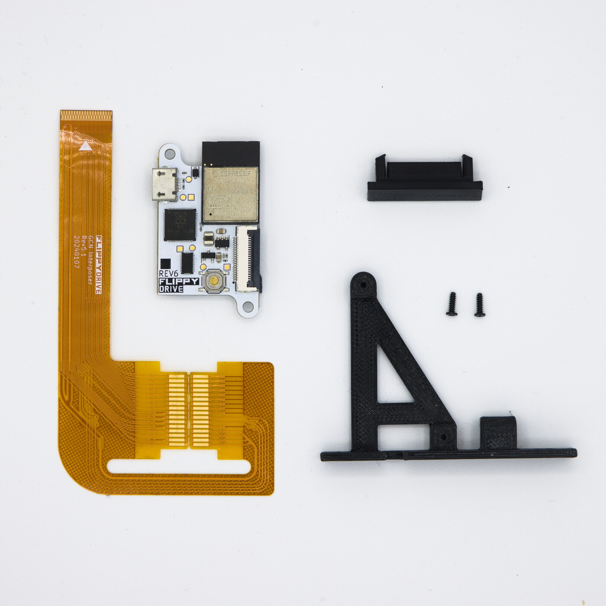
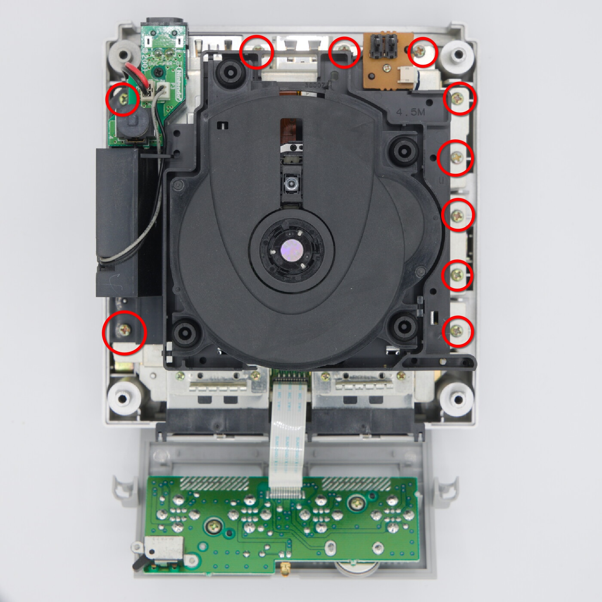
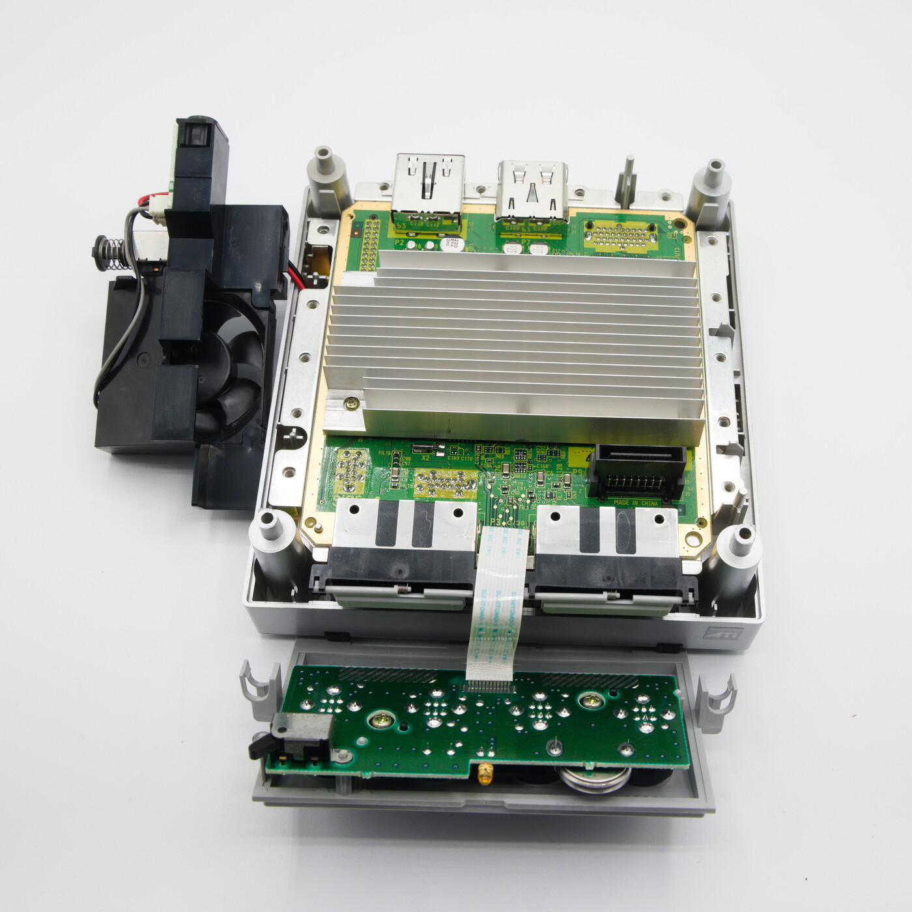
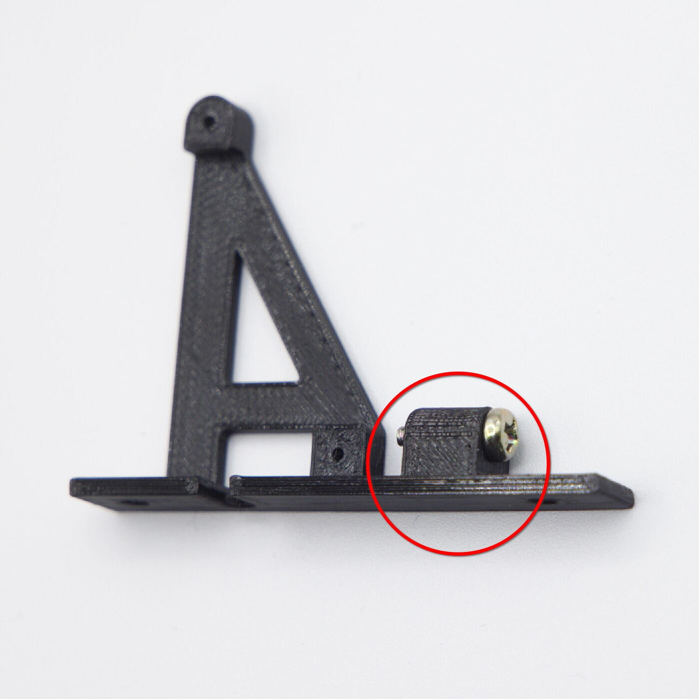
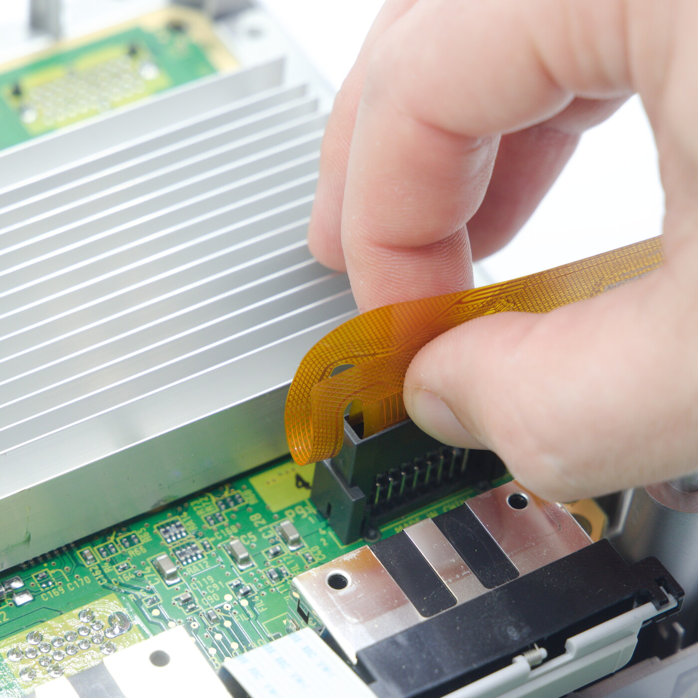
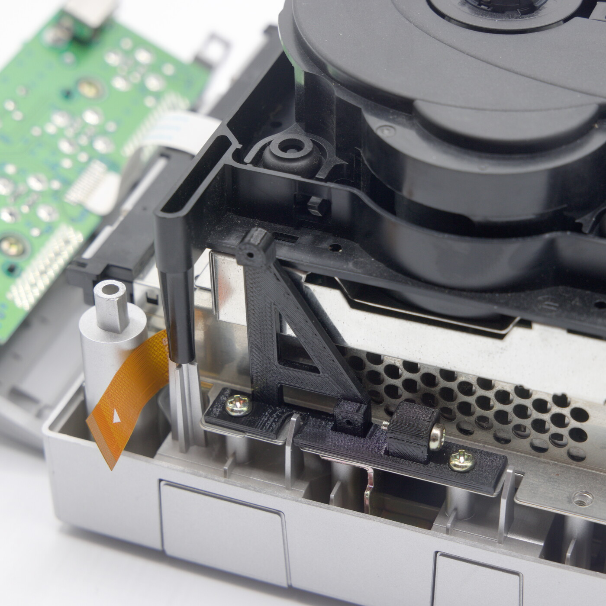
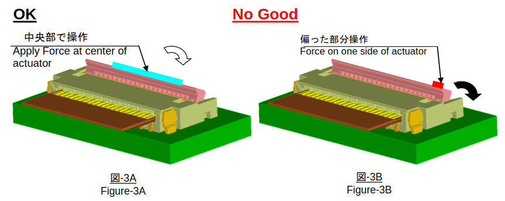

Installation¶
FlippyDrive has a solderless installation process and can be used with or without the disc drive. Many of the notes and callouts here are the result of previous failed installs, so read them carefully to avoid falling into the same trap.
Attention
IF YOU READ NOTHING ELSE, READ THIS NOTE
It is highly recommended to use the the disc drive installation method, even if your drive is non-functional. The drive plug is included simply as a convenience for people who have lost their drive. The OEM disc drive is rigidly attached with screws and provides a highly reliable connection for the FlippyDrive flex.
Things Required¶
{kind=link}
10-15 Minutes
FlippyDrive kit (FlippyDrive, flex cable, mounting frame, drive plug, two screws)
4.5mm Gamebit screwdriver
#0 Phillips screwdriver
#1 Phillips screwdriver (optional)
#2 Phillips screwdriver
Step 1: Open the GameCube¶
Remove the 4 Gamebit screws

Flip the GameCube rightside up, remove and set aside the lid

Set aside the rear IO shield and let the front IO shield dangle.
Note
It is not necessary to detach the front IO panel. You may do so, but time will be lost and must be set on first boot.

Using a #2 Phillips, remove the 10 RF shield screws
{kind=link}
Tilt and let the fan/power connector assembly rest loose. It remains attached to the GameCube during this process. Remove the 4 previously obscured screws.

Using a #1 or #0 Phillips, remove the 4 memory card RF-finger screws

With one hand holding the base of the GameCube, grab the drive and pull it upward, freeing the drive and RF shield from the GameCube motherboard.

At this point, your GameCube will be disassembled, hooray üéâ
{kind=link}
Step 2: Prepare FlippyDrive¶
The mounting frame will cover one of the GameCube screw holes, so put 1 of the RF shield screws into the provided storage hole and set aside for later.
{kind=link}
Fold the flex cable along the perforation as seen below. When viewing the flex cable, make sure the fold along the perforation results in the crease pointing “upward” like a ‘W’ on the side of the flex cable with a triangle symbol.
Note
The flex cable is quite forgiving to excessive force, but it is undesirable to form a sharp fold. As long as it can seat into the connector, it will function.

Gently place the flex cable into the disc drive slot.
{kind=link}
Verify that the flex cable is folded correctly and is not upside down. The long arm of the flex cable will be between the disc connector and the heat sink.

Now fold the flex cable down such that it sits between the disc connector and heat sink, and it is no longer on top of the heat sink.
Attention
Do not skip this step as it will reduce the available length of the flex and make it harder to attach later.
{kind=link}
Step 2a: With Disc Drive¶
Inspect your disc drive. The FlippyDrive flex cable will be escaping from under the shield on the “front right” corner if viewing the drive from the front.
Note
Some of the sheet metal RF shields were over-aggressively folded. If necessary, bend the shield very slightly back into square to restore the gap that should exist.
{kind=link}
Back on the GameCube, route the flex cable between the nearby small and large plastic mounting pillars.

Gently lower the drive assembly down onto the GameCube, and snake the flex cable through the slot in the folded sheet metal shield. Once the flex cable is in the proper position, push the drive downward.
Danger
It only takes approximately 10 lb (5 kg) of force to mate the drive to the GameCube. If you encounter more resistance, don’t force it. Stop, remove the drive, and inspect the flex cable placement. The flex cable is fairly tear-resistant, but not if you put your entire body weight on it.

Step 2b: Without Disc Drive¶
Use the provided drive plug and push straight down onto the flex cable and connector until it stops.
Attention
If you need to remove the drive plug for any reason, pull it up from both sides simultaneously and do not aggressively rock it from side to side. Doing so may break off the alignment tabs inside the connector. If that happens, use tweezers to reach underneath the broken plastic to pull it upward. The drive plug will still work with broken alignment tabs, although you will need to be more careful about left-right placement.
{kind=link}
Step 3: Install the FlippyDrive¶
Inspect the FlippyDrive. Check the flex cable connector locking tab and make sure it is in the unlocked/up position.
Danger
DO NOT try prying the tab up if it is already unlocked as you will likely snap it off. When unlocked, the tab wiggles gently when touched and sits proud of the rest of the connector body.
{kind=link}
Attach the mounting frame to the GameCube with two of the RF shield screws.
{kind=link}
Check the orientation of the flex cable and line up so that the two triangles are on the same side. Attach the flex cable to the FlippyDrive, gently push it in until it reaches a hard stop, and push closed the locking tab.
If the flex does not easily insert, check the previous step. Remember it’s a delicate connector, so be gentle.
Danger
When closing the black flex locking tab, push it closed from the center, ideally with your whole thumb. DO NOT push it closed from one edge. YOU WILL BREAK IT if you try closing the tab unevenly. See the manufacturer’s drawing:
{kind=link}
When locked, the black locking tab will be flush with the body of the connector.

Note
Attaching the flex cable to the FlippyDrive after mounting it to the frame is quite difficult, so it is recommended to follow these assembly instructions in-order.
Using a #0 Phillips, attach FlippyDrive to the frame with the two provided screws.

Step 4: Verify Installation¶
Warning
If you removed the front panel/controller board, time will be lost and you must set the clock. After setting the clock, power cycle the GameCube to proceed.
Connect the GameCube to a display and power on the GameCube while holding X. It is safe to run the GameCube without a fan for quite some time. You should see the FlippyDrive bootloader, which means the install was successful!
Please wait to see that the install completes successfully and press START when prompted before powering off.
Need help?
See the Troubleshooting section for more tips
Step 5: Reassemble GameCube¶
Follow the instructions in Step 1 in reverse.
Danger
Make sure your disc lid is open before reassembly. Attaching it when closed can damage the door cover switch.
Note
If you did not remove the front controller panel during disassembly, make sure its flex cable is still fully seated on the GameCube motherboard.
Note
Don’t forget to install the 4 screws normally hidden by the fan/power connector assembly before placing it back on.